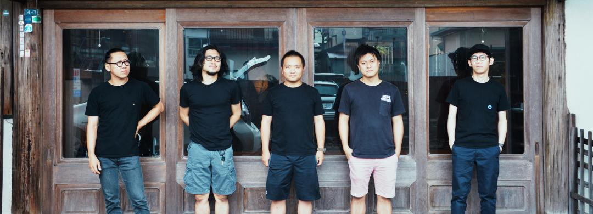
合宿最高
2019/7/13〜15までインスタンスゼロのメンバーで開発合宿に行きました。
宿泊場所
山喜旅館
静岡県伊東市東松原町４番７号
http://www.ito-yamaki.jp/
TEL：0557-37-4123 FAX：0557-38-8123
プロジェクト状況やなかなか進まない自社サービスについて話した後に、 コンビニで買い占めたアルコールを飲んでワイワイ楽しかった！このメンバーで良いサービスを作っていくのが楽しみ！それにしても酒好き多いなぁ！
ただ、心残りが！天気が悪く抜け出して釣りに行ったけど、、、 竿を出す気にもならない大しけで残念だった！CEOは負けずとフライを投げてたけど、、釣りができる状況じゃないのでボーズでした。次の合宿も海の側にしよう！
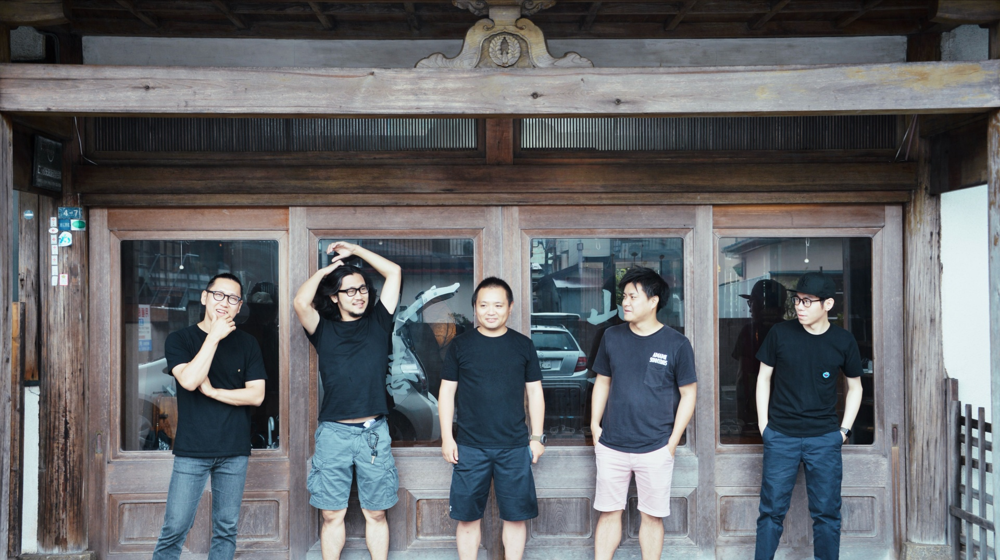
 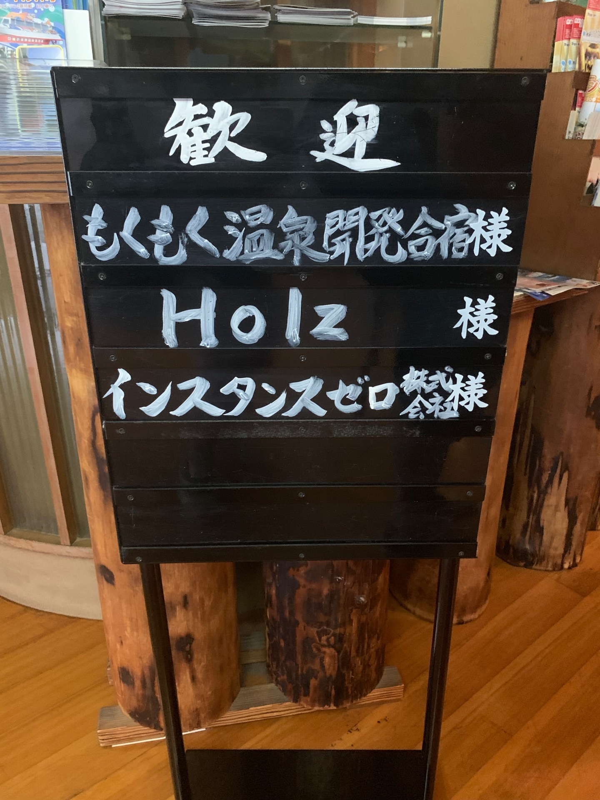
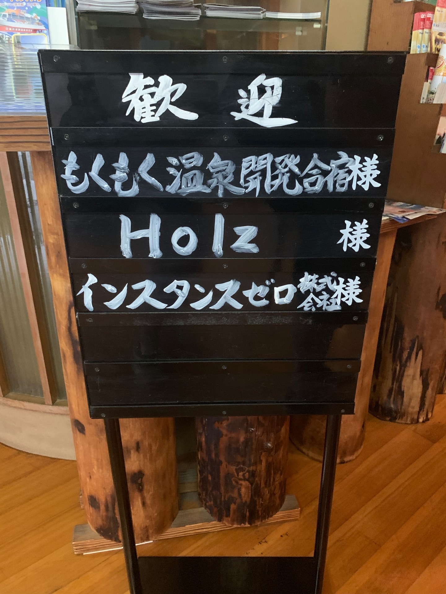
 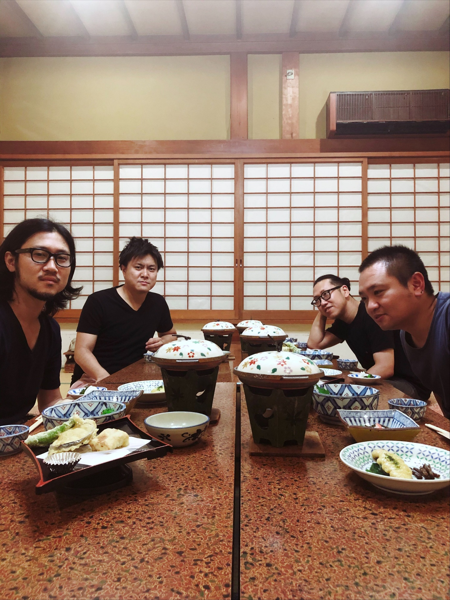
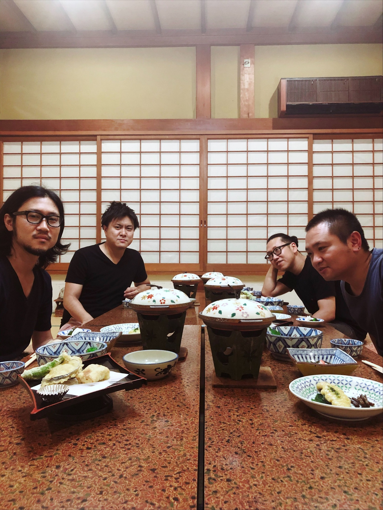
 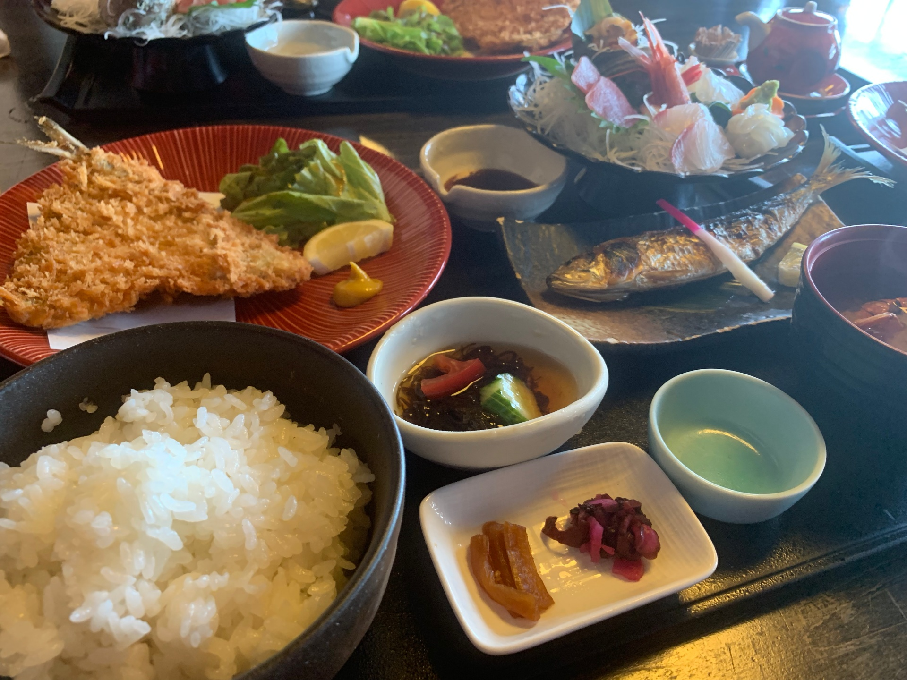
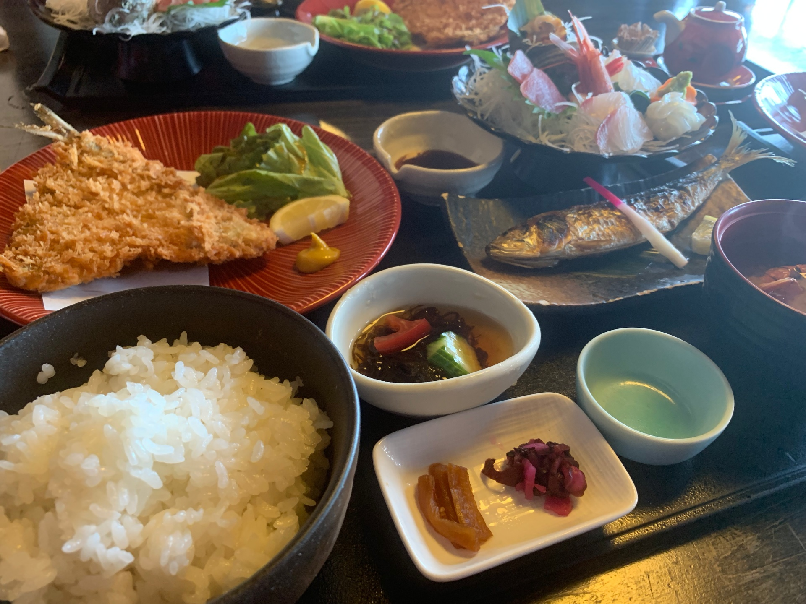
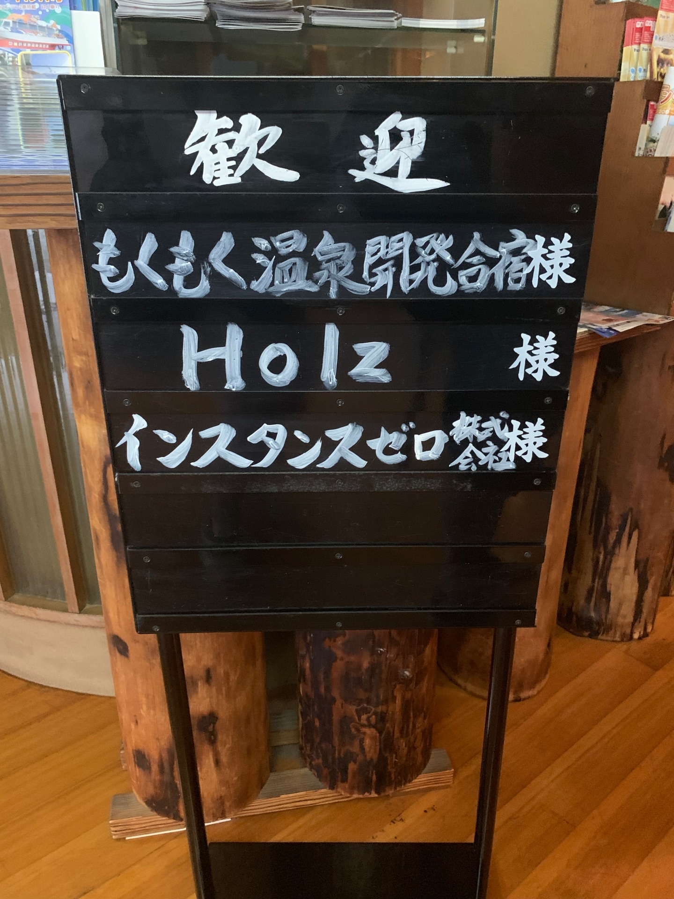
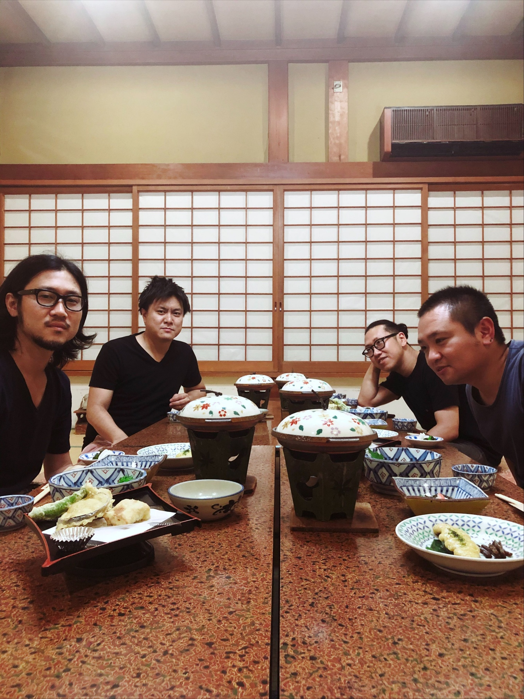
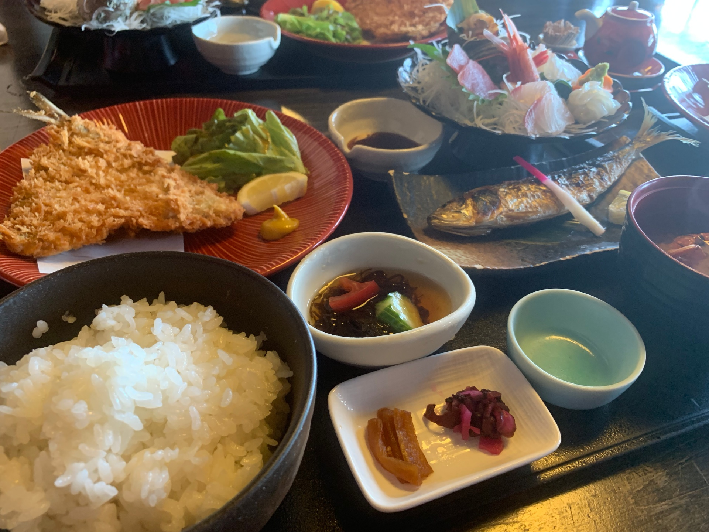